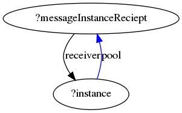

US Section 11.3.2 AcceptEventAction
To see the rule description in the US pdf document, click here .
{kind=link}
Context
Below is the xml file which defines the order in which the rules are executed.
Rationale and Comments
AcceptEventAction is 'an action that waits for the occurrence of an event meeting a specified condition'. The Action has a Trigger (the event) and a Result (an output pin that holds the accepted event).
This variation is the first option considered when the action is called, as part of an exclusive dependency, which acts as a set of if-conditions. It will be applied if the instance is not in a state for which the received event is a trigger, or alternatively not in active state at all. The result is that the event is ignored.
In response to Issue 7, the following solution was implemented:

AGG will only apply the NAC once, even if it fits in multiple places.
AGG needs a whole new NAC on each of the multiple fits for it to stop execution.
This is very bad for us because we want the rule to not execute if the NAC fits ANYWHERE not if it fits EVERYWHERE.
I've solved the problem, but the solution is massively inelegant. I added 2 more versions of acceptEventAction-AndIgnore. These 3 rules go in a new action. The 2 new rules are like the original but they have duplicate event-trigger-source branches. See attachment. This is very undesirable because it only works if there's 1, 2 or 3 transitions going out of 1 state. If there were 4 then we'd need to add another rule.
The model now works fine, but I'm keeping this issue open because we need to find a better solution.
The additional rules are the following:
{kind=link}
{kind=link}